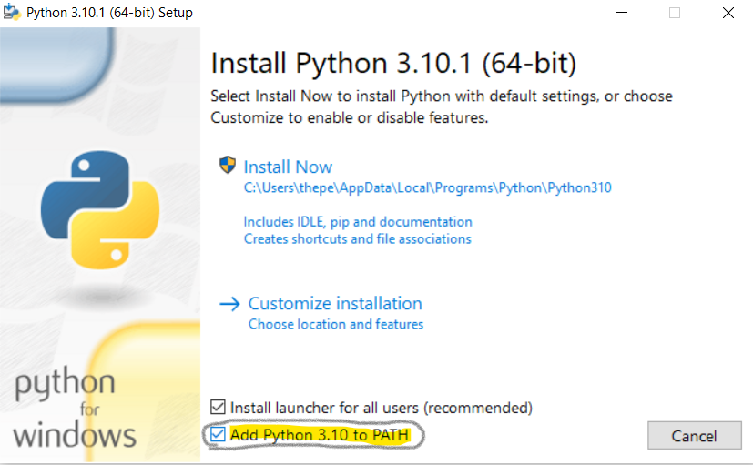

Before you start learning Python, you need to install and setup a couple of quick things.
First of all, you will need to download Python. To do that, simply go to the Python Downloads page and select your computer operating system. (Windows, MacOS, or Linux/UNIX) Try getting the newest version of Python 3 as that would have the most bug fixes and this beginner Python tutorial uses Python 3.
Once you are done downloading the download file (.exe, .pkg, .tar.gz, etc.), run it and follow the prompts the window gives you. If the default options give you no problems, use those and only change the options if you absolutely need to. No problems here!
IMPORTANT NOTICE!!!
WHEN IT COMES TO ASK YOU WHETHER OR NOT TO ADD PYTHON TO YOUR PATH, CHOOSE THAT OPTION AND CHECK IT AS "YES"!
